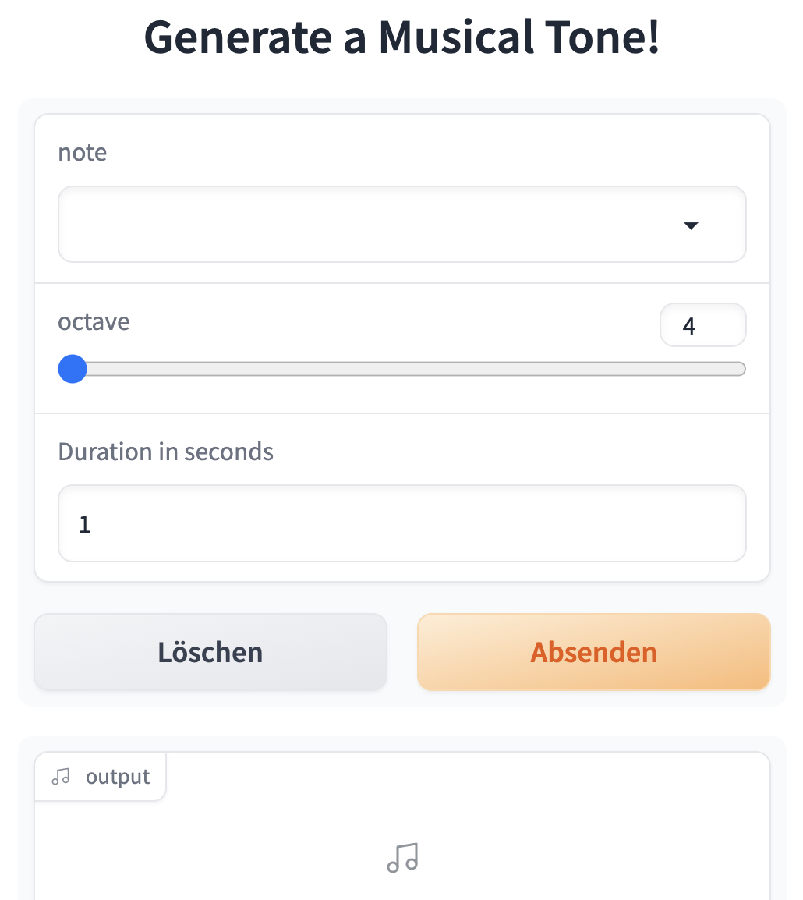

from IPython.display import IFrame
import numpy as np
import gradio as grBuild and Host Machine Learning Demos with Gradio & Hugging Face
Why Demos?
Developers can easily present their work to a wide audience
Increase reproducibility of machine learning research
Easily identify and debug failure points of models
Learning goals
Learn how to:
- Build a quick demo for your machine learning model in Python using the
gradiolibrary - Host the demos for free with Hugging Face Spaces
- Add your demo to the Hugging Face org for your class
Keras Org on Hugging Face
As a quick example of what we would like to build, check out the Keras Org on Hugging Face
Open any Space in your browser to use the model immediately
Gradio Basics
gradio is a Python library that lets you build web demos simply by specifying the list of input and output components expected by your machine learning model.
Gradio components
Gradio comes with a bunch of predefined components for different kinds of machine learning models.
For an image classifier, the expected input type is an
Imageand the output type is aLabel.For a speech recognition model, the expected input component is an
Microphone(which lets users record from the browser) orAudio(which lets users drag-and-drop audio files), while the output type isText.For a question answering model, we expect 2 inputs: [
Text,Text], one textbox for the paragraph and one for the question, and the output type is a singleTextcorresponding to the answer.For all of the supported components, see the docs
Gradio prediction function
In addition to the input and output types, Gradio expects a third parameter, which is the prediction function itself.
This parameter can be any regular Python function that takes in parameter(s) corresponding to the input component(s) and returns value(s) corresponding to the output component(s)
Python setup
Image App
Custom Python function
- Let’s create a simple Python function
def sepia(image):
sepia_filter = np.array(
[[0.393, 0.769, 0.189],
[0.349, 0.686, 0.168],
[0.272, 0.534, 0.131]]
)
sepia_img = image.dot(sepia_filter.T)
sepia_img /= sepia_img.max()
return sepia_imgGradio Image App
Gradio Image App Interface
Gradio Sound App
Create an app that generates a musical tone when provided a few different parameters.
Gradio Sound App
def generate_tone(note, octave, duration):
sampling_rate = 48000
a4_freq, tones_from_a4 = 440, 12 * (octave - 4) + (note - 9)
frequency = a4_freq * 2 ** (tones_from_a4 / 12)
audio = np.linspace(0, int(duration), int(duration) * sampling_rate)
audio = (20000 * np.sin(audio * (2 * np.pi * frequency))).astype(np.int16)
return sampling_rate, audio
gr.Interface(
generate_tone, # function
[
gr.Dropdown(["C", "C#", "D", "D#", "E", "F", "F#",
"G", "G#", "A", "A#", "B"], type="index"),
gr.Slider(4, 6, step=1),
gr.Number(value=1, label="Duration in seconds"),
],
"audio",
title="Generate a Musical Tone!"
).launch()Gradio Sound App Interface

Text-to-Speech App
It is especially easy to demo a
transformersmodel from Hugging Face’s Model Hub, using the specialgr.Interface.loadmethod.Text-to-speech model built by Facebook:
gr.Interface.load("huggingface/facebook/fastspeech2-en-ljspeech").launch()Gradio Text to Speech App Interface
GPT-J App
- Demo for GPT-J, a large language model & add a couple of examples inputs:
examples = [["A student at HdM Stuttgart is"],
["In Stuttgart you can "]]
gr.Interface.load("huggingface/EleutherAI/gpt-j-6B",
examples=examples).launch()Gradio GP-J App Interface
Build your own App
You can go to the Hugging Face Model Hub and pick any model that performs one of the tasks supported in the
transformerslibraryCreate a Gradio demo for that model using
gr.Interface.load.
Host the Demo
Host the Demo (for free) on Hugging Face Spaces
Workflow, 1
- Here are the steps to that (also see GIF in the next slide):
First, create a Hugging Face account if you do not already have one, by visiting https://huggingface.co/ and clicking “Sign Up”
Once you are logged in, click on your profile picture and then click on “New Space” underneath it to get to this page: https://huggingface.co/new-space
Give your Space a name and a license. Select “Gradio” as the Space SDK, and then choose “Public” if you are fine with everyone accessing your Space and the underlying code
Then you will find a page that provides you instructions on how to upload your files into the Git repository for that Space. You may also need to add a
requirements.txtfile to specify any Python package dependencies.Once you have pushed your files, that’s it! Spaces will automatically build your Gradio demo allowing you to share it with anyone, anywhere!
Workflow in a GIF
- You may also choose “public” instead of “private” when you create your space